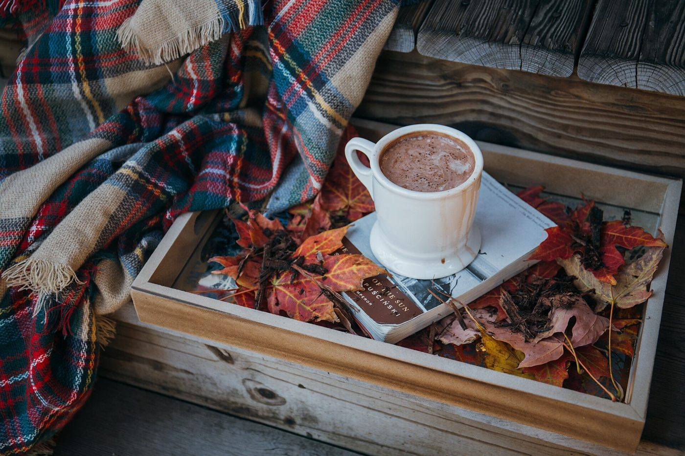
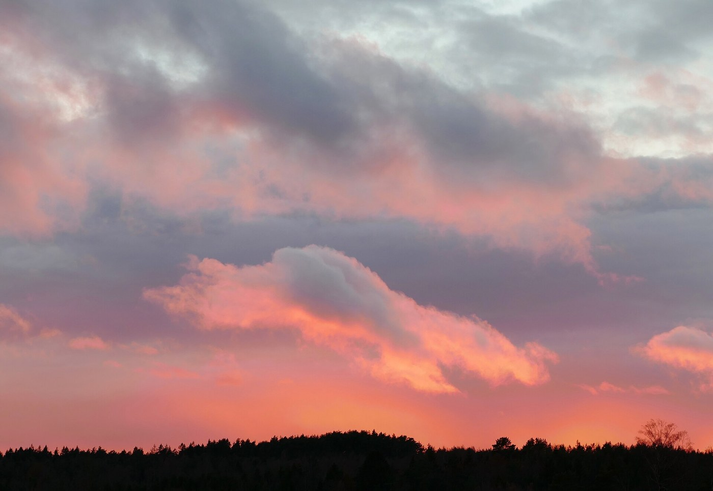

HUUMÖRI CAFE / TAKACHIHO
フーモリ
ユーモアを忘れずに、ゆっくり過ごす。築80年の古民家で、お茶と会話をわけあう北欧のひととき。
お店のこと
ABOUT
「フーモリ(Huumori)」は、フィンランド語で「ユーモア」のこと。店主の佐藤なな絵さんは北欧の文化が好きで、スウェーデンの「フィーカ」(お茶を飲みながら人と語らう時間)の習慣に惹かれ、「心にユーモアを持って、ゆったり過ごしてほしい」との想いでお店を開いています。
2023年4月、高千穂町三田井の宿「たかちほ 旅人とまちの宿 さんかく」の1階で間借り営業を始め、2026年に、近くにある築80年の古民家へ移転しました。(日向経済新聞の記事より)


席はテーブル6卓(14席)と座敷2卓(4席)。座敷は小さなお子さま連れにも向いていると、スタッフの方が紹介されています。
地元・高千穂の食材を使った日替わりのランチと、見た目も美しいスイーツが人気です。
メニュー
MENU
報道(2026年4月)で紹介されていた内容です。価格・内容は変わることがあるため、価格・最新メニューは準備中です。





口コミ
VOICE
イメージ例
木のぬくもりのある店内で、ついゆっくりしてしまいました。ランチのあとのお茶が楽しみです。
イメージ例
ケーキが見た目もかわいくて、写真を撮りたくなります。座敷があるのでお子さん連れでも安心でした。
イメージ例
旅の途中に寄りました。野菜たっぷりのプレートで、ほっと一息つけました。
※口コミは制作側が作成したイメージ例であり、実在のお客様の声ではありません。
アクセス
ACCESS
- 住所
- 〒882-1101 宮崎県西臼杵郡高千穂町三田井19
- 電話
- 準備中
- 営業時間
- 準備中(報道時点では11:00〜16:00、ランチ11:00〜14:00、月〜水曜休みとありました。来店前にInstagramでご確認ください)
- @huumori__cafe
写真について
PHOTO CREDITS
掲載写真はフリー素材のイメージで、店舗の実際の様子ではありません。
- window.jpg「Window in a cafe in San Gimignano」Rhododendrites / CC BY-SA 4.0
- wood.jpg「Weatherworn top of wooden table」W.carter / CC0 1.0
- teapot.jpg「Porcelain teapot on windowsill」Nathan Fertig / CC0 1.0
- bread.jpg「Toasted oatmeal bread with butter and apple butter」Daderot / CC0 1.0
- mocha.jpg「Mocha Cake - Djanogly Café, Tate Britain」Andy Li / CC0 1.0
- cocoa.jpg「Hot chocolate (Unsplash)」Alisa Anton / CC0 1.0
- bowl.jpg「Light green ceramic bowl 1」W.carter / CC BY-SA 4.0
- mug.jpg「Bright turquoise mug sits on a wooden table by the window…」Shixart1985 / CC BY 2.0
- monstera.jpg「Monstera deliciosa DSC02605」Smatu / CC BY-SA 4.0
- wheat.jpg「Wheat field infested by scentless mayweed, Röe, Lysekil, Sweden 1」W.carter / CC0 1.0
- forest.jpg「August 2007, Forest near Helsinki airport 13」Syced / CC0 1.0
- gaseberg.jpg「Sunset over Gåseberg 3」W.carter / CC0 1.0


